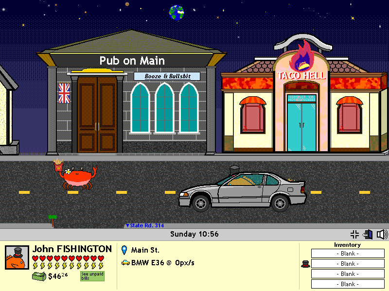

Fish-with-a-hat simulator.
Have you ever imagined how life would be back in ye olden days,
in the midst of the first decade of this very millennium...
If you were an English orange porgy with a top hat?
That recently moved to a rural town on the other side of the Alantic by accident?
And is a drunkard with access to vehicles, firearms and drugs?
THE GAME DOES NOT CONTAIN, NOR DOES THE AUTHOR CONDONE ACTS OF BESTIALITY. FOR THE LOVE OF GOD THAT IS JUST THE NAME.
It's a wacky ass game that I've made back in high school. You play as John Fishington the orange fish with a top hat,
where you have to go around town for food, pay bills, drink spoiled milk and run a sandwich shop. Below is a screenshot from the game:

I suppose it had been interesting to work with Java Swing and java.awt.graphics for this game. No external libraries or game engines or anything, coding stuff like collision detection has been somewhat fun.